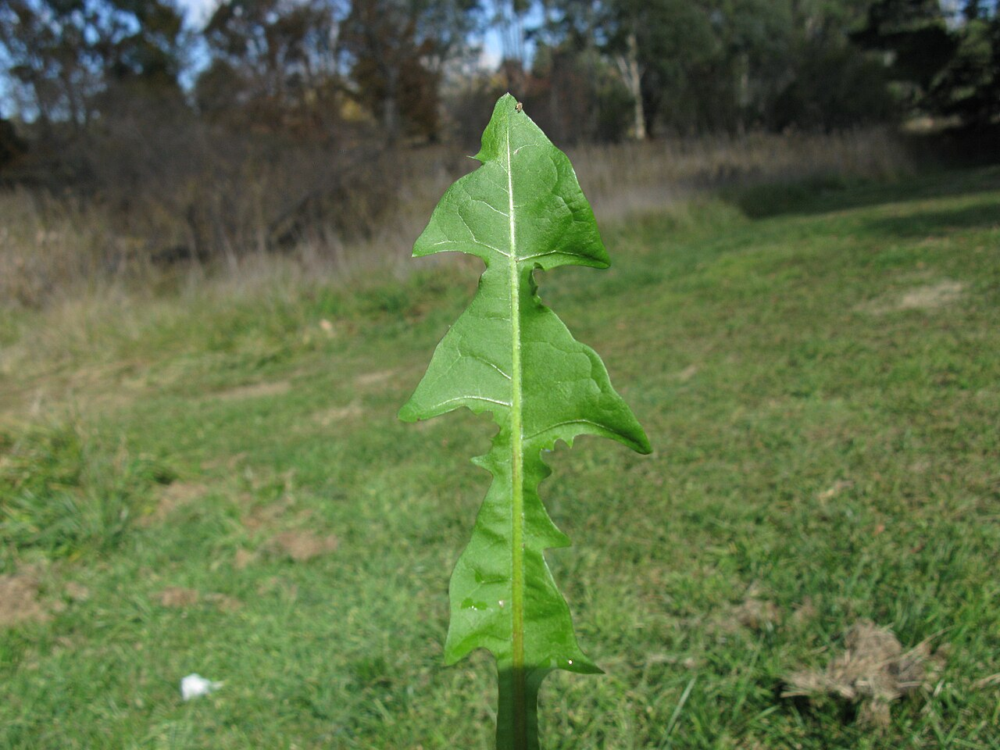

Edible · Herb · Year-round; best young in spring
Dandelion
Taraxacum officinale
- How to recognize it
- Basal rosette of jagged 'lion's tooth' leaves, single hollow stem with milky sap, yellow composite flower, puffball seed head.
- Watch for
- Avoid sprayed lawns and roadsides when studying real plants. The deck notes that several yellow composite flowers can look similar.
- Deck note
- The same cosmopolitan weed grows in sidewalk cracks on five continents.